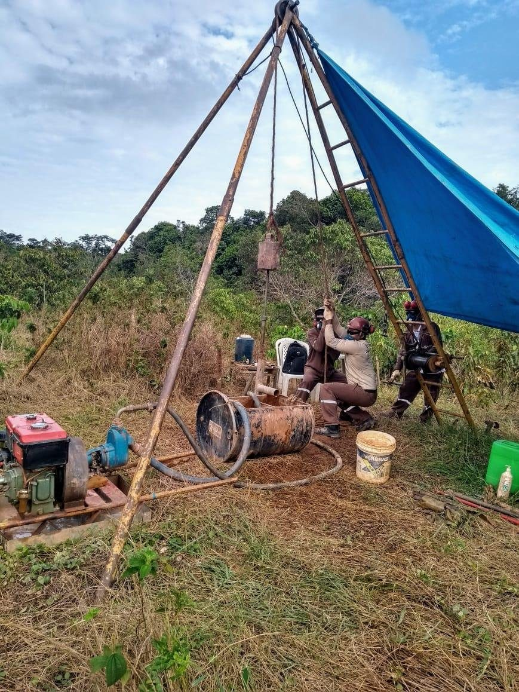

Camada 01
Ensaios de campo
Investigação geotécnica para conhecer o terreno antes de qualquer decisão de projeto.
- Sondagens à percussão, rotativas, mistas e a trado
- Sondagens resistivas para linhas de transmissão
- Ensaios de permeabilidade e de perda d’água
- Coleta de amostras deformadas e indeformadas
- Sondagens geoambientais especiais
- Ensaios de piezocone e vane test (palheta)